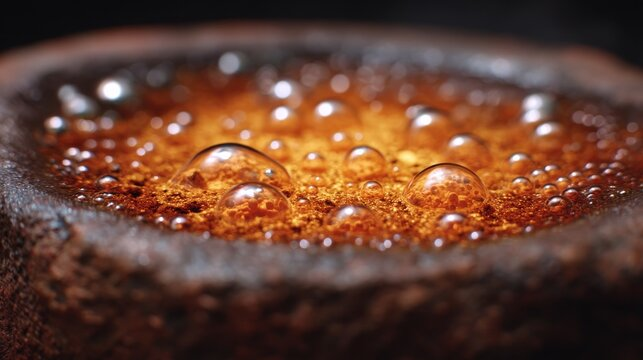

<!DOCTYPE html>
<html lang="en">

<head>
  <meta charset="UTF-8">
  <meta name="viewport" content="width=device-width, initial-scale=1.0">
  <title>Medora Group | Sulfuric Acid | Global Trade & Advisory Services</title>
  <meta name="description"
    content="High-purity sulfuric acid (98%) for industrial applications including chemical manufacturing, fertilizers, and water treatment.">
  <meta name="keywords" content="sulfuric acid, H2SO4, industrial chemicals, chemical manufacturing, fertilizers">
  <meta name="author" content="Medora Group">
  <meta property="og:title" content="Medora Group - Sulfuric Acid">
  <meta property="og:description"
    content="High-purity sulfuric acid for industrial applications and chemical manufacturing.">
  <meta property="og:type" content="website">
  <meta property="og:url" content="https://www.medoragroup.com/acide-sulfurique-product.html">
  <meta property="og:image" content="https://www.medoragroup.com/images/social-preview.png">

  <link rel="canonical" href="https://www.medoragroup.com/acide-sulfurique-product.html">
  <link rel="apple-touch-icon" sizes="180x180" href="./images/apple-touch-icon.png">
  <link rel="icon" type="image/png" sizes="32x32" href="./images/favicon-32x32.png">
  <link rel="icon" type="image/png" sizes="16x16" href="./images/favicon-16x16.png">
  <link rel="manifest" href="./site.webmanifest">
  <link href="https://fonts.googleapis.com/css2?family=Poppins:wght@300;400;600;700&display=swap" rel="stylesheet">
  <link rel="stylesheet" href="https://cdnjs.cloudflare.com/ajax/libs/font-awesome/6.4.0/css/all.min.css">
  <link rel="stylesheet" href="style.css" />
</head>

<body>
  <header>
    <div class="container header-content">
      <a href="index.html">
        
      </a>
      <button class="menu-toggle" aria-label="Toggle navigation">
        <span></span>
        <span></span>
        <span></span>
      </button>
      <nav class="nav">
        <a href="index.html">Home</a>

        <!-- Services Dropdown -->
        <div class="nav-dropdown">
          <a href="services.html">Services</a>
          <div class="dropdown-content">
            <a href="engineering-manufacturing.html">Engineering & Manufacturing</a>
            <a href="energy-petrochemicals.html">Energy & Petrochemicals</a>
            <a href="chemicals-minerals.html">Chemicals & Minerals</a>
            <a href="pharma-products.html">Pharmaceuticals & Healthcare</a>
          </div>
        </div>

        <a href="about.html">About</a>
        <a href="contact.html">Contact</a>
      </nav>
    </div>
  </header>

  <!-- SULFURIC ACID HERO SECTION -->
  <section class="product-hero"
    style="background: linear-gradient(rgba(11, 79, 108, 0.85), rgba(11, 79, 108, 0.85)), url('images/sulfuric-acid_hero.jpg') no-repeat center center / cover;">
    <div class="container">
      <h1>Sulfuric Acid</h1>
      <p>High-purity sulfuric acid (98%) for industrial applications including chemical manufacturing and fertilizers
      </p>
    </div>
  </section>

  <!-- PRODUCT OVERVIEW -->
  <section class="product-overview">
    <div class="container">
      <div class="overview-grid">
        <div class="overview-content">
          <h2>Definition</h2>
          <p>Sulfuric Acid (HSO) is a strong mineral acid — a colorless, odorless, oily liquid that is highly
            + corrosive and fully miscible with water. Recognized as one of the most important industrial chemicals,
            + sulfuric acid is essential to a broad range of manufacturing processes worldwide.</p>

          <h2 style="margin-top:1rem">Why Choose Our Sulfuric Acid?</h2>
          <p>Medora supplies industrial-grade sulfuric acid (up to 98% concentration) with rigorous quality control,
            + safe packaging and global logistics support. We offer bulk quantities, customizable concentrations and a
            + reliable supply chain across North Africa, MENA and international markets.</p>

          <div class="features-grid">
            <div class="feature-item">
              <div class="feature-icon">
                <i class="fas fa-vial"></i>
              </div>
              <h3>High Purity</h3>
              <p>97.5-98.5% H₂SO₄ concentration with minimal impurities</p>
            </div>

            <div class="feature-item">
              <div class="feature-icon">
                <i class="fas fa-industry"></i>
              </div>
              <h3>Industrial Grade</h3>
              <p>Manufactured to meet stringent industrial standards</p>
            </div>

            <div class="feature-item">
              <div class="feature-icon">
                <i class="fas fa-shield-alt"></i>
              </div>
              <h3>Safe Handling</h3>
              <p>Comprehensive safety protocols and documentation</p>
            </div>
          </div>
        </div>

        <div class="overview-image">
          
        </div>
      </div>
    </div>
  </section>

  <!-- TECHNICAL SPECIFICATIONS -->
  <section class="specs-section">
    <div class="container">
      <div class="section-title">
        <h2>Technical Specifications</h2>
        <p>Our sulfuric acid meets international quality standards for industrial applications</p>
      </div>

      <table class="specs-table">
        <thead>
          <tr>
            <th>Parameter</th>
            <th>Specification</th>
            <th>Unit</th>
          </tr>
        </thead>
        <tbody>
          <tr>
            <td>H₂SO₄ Concentration</td>
            <td>97.5 - 98.5</td>
            <td>% by weight</td>
          </tr>
          <tr>
            <td>HCl Content</td>
            <td>&lt; 20</td>
            <td>ppm</td>
          </tr>
          <tr>
            <td>Iron (Fe) Content</td>
            <td>&lt; 50</td>
            <td>ppm</td>
          </tr>
          <tr>
            <td>Arsenic (As) Content</td>
            <td>&lt; 20</td>
            <td>ppm</td>
          </tr>
          <tr>
            <td>SO₂ Content</td>
            <td>&lt; 100</td>
            <td>ppm</td>
          </tr>
          <tr>
            <td>Density at 25°C</td>
            <td>1.830</td>
            <td>g/cm³</td>
          </tr>
          <tr>
            <td>Appearance</td>
            <td>Colorless liquid</td>
            <td>-</td>
          </tr>
          <tr>
            <td>Odor</td>
            <td>Odorless</td>
            <td>-</td>
          </tr>
        </tbody>
      </table>

      <p style="text-align: center; margin-top: 1.5rem;"><em>Note: Impurities may cause yellow-brown coloration. All
          specifications verified by independent laboratory testing.</em></p>
    </div>
  </section>

  <!-- APPLICATIONS SECTION -->
  <section class="applications-section">
    <div class="container">
      <div class="section-title">
        <h2>Sulfuric Acid Applications</h2>
        <p>The backbone of modern industry with vital roles across multiple sectors</p>
      </div>

      <div class="applications-grid">
        <div class="application-card">
          <div class="application-img" style="background-image: url('images/chemical_fertilizer.jpg');"></div>
          <div class="application-content">
            <h3>Chemical & Fertilizer Industry</h3>
            <p>The largest application of sulfuric acid is in the production of phosphate fertilizers such as
              superphosphate and ammonium phosphate.
              <br>Used in manufacturing synthetic chemicals, detergents, and dyes.
              Essential for producing hydrochloric acid, nitric acid, and sulfate salts.
            </p>
          </div>
        </div>

        <div class="application-card">
          <div class="application-img" style="background-image: url('images/metallurgical_industry.jpg');"></div>
          <div class="application-content">
            <h3>Metallurgical Industry</h3>
            <p>Used in metal pickling (cleaning and preparation of metals like iron and steel). <br>Plays a key role in
              leaching processes for copper, zinc, and uranium extraction. Ensures oxide removal and enhances surface
              finishing in metal treatment.</p>
          </div>
        </div>

        <div class="application-card">
          <div class="application-img" style="background-image: url('images/petroleum_automotive.jpg');"></div>
          <div class="application-content">
            <h3>Petroleum & Automotive Sector</h3>
            <p>Used in refining crude oil, particularly in alkylation processes to improve fuel octane levels.
              <br>Essential in battery manufacturing, especially for lead-acid automotive batteries that power vehicles
              worldwide.
            </p>
          </div>
        </div>

        <div class="application-card">
          <div class="application-img" style="background-image: url('images/water_treatment.jpg');"></div>
          <div class="application-content">
            <h3>Water Treatment & Industrial Cleaning</h3>
            <p>Acts as a pH regulator and descaling agent in industrial water treatment. <br>Used for industrial
              cleaning, degreasing, and wastewater purification in various manufacturing and processing facilities.</p>
          </div>
        </div>

        <div class="application-card">
          <div class="application-img" style="background-image: url('images/environmental_applications.jpg');"></div>
          <div class="application-content">
            <h3>Environmental & Miscellaneous Uses</h3>
            <p>Applied in flue-gas desulfurization and pollution control systems to reduce environmental impact.
              <br>Used in textile, paper, and explosives manufacturing, demonstrating the chemical's remarkable
              versatility across
              industries.
            </p>
          </div>
        </div>
      </div>
    </div>
  </section>

  <!-- SAFETY & HANDLING -->
  <section class="benefits-section">
    <div class="container">
      <div class="section-title">
        <h2>Safety & Handling</h2>
        <p>Comprehensive safety information for proper handling and storage</p>
      </div>

      <div class="benefits-grid">
        <div class="benefit-item">
          <h3><i class="fas fa-exclamation-triangle"></i> Hazard Identification</h3>
          <p><strong>Inhalation:</strong> Destructive effects on mucous membranes and upper respiratory tract.<br>
            <strong>Skin Contact:</strong> Corrosive - may cause redness, pain, and burns.<br>
            <strong>Eye Contact:</strong> Corrosive - may cause blurred vision.<br>
            <strong>Ingestion:</strong> Corrosive - may cause serious burns.
          </p>
        </div>

        <div class="benefit-item">
          <h3><i class="fas fa-hard-hat"></i> Protective Equipment</h3>
          <p>Safety glasses, acid-resistant clothing, and safety shoes are mandatory. Ensure proper ventilation in
            storage and handling areas.</p>
        </div>

        <div class="benefit-item">
          <h3><i class="fas fa-truck"></i> Transport & Storage</h3>
          <p>Transport by land or sea in acid-resistant tanks. Store in closed containers away from moisture, with
            acid-resistant flooring. Keep away from heat and water sources.</p>
        </div>

        <div class="benefit-item">
          <h3><i class="fas fa-fire-extinguisher"></i> Spill Procedures</h3>
          <p>Wear appropriate protective equipment, isolate the dangerous area. Neutralize with alkaline materials
            (sodium carbonate, lime), then absorb with inert material (sand).</p>
        </div>
      </div>
    </div>
  </section>

  <!-- CONTACT SECTION -->
  <section class="contact-cta">
    <div class="container">
      <h2>Interested in Sulfuric Acid?</h2>
      <p>Contact us for technical specifications, pricing, and safety documentation</p>
      <a href="contact.html" class="btn">Contact Our Team</a>
    </div>
  </section>

  <!-- FOOTER -->
  <footer>
    <div class="container footer-container">
      <div class="footer-column">
        <div class="footer-logo">Medora Group</div>
        <p class="footer-tagline">Redefining international trade by eliminating barriers and building trust-driven
          partnerships.</p>
        <a href="https://www.linkedin.com/company/medora-group" style="color: var(--gold); 
                display: inline-block; 
                margin: 10px 0;">
          <i class="fab fa-linkedin fa-2x"></i>
        </a>
      </div>

      <div class="footer-column">
        <h4>Quick Links</h4>
        <ul class="footer-links">
          <li><a href="index.html"><i class="fas fa-home"></i> Home</a></li>
          <li><a href="services.html"><i class="fas fa-cogs"></i> Services</a></li>
          <li><a href="chemicals-minerals.html"><i class="fas fa-flask"></i> Products</a></li>
          <li><a href="about.html"><i class="fas fa-info-circle"></i> About</a></li>
          <li><a href="contact.html"><i class="fas fa-envelope"></i> Contact</a></li>
        </ul>
      </div>

      <div class="footer-column">
        <h4>Global Offices</h4>
        <div class="contact-info">
          <div class="office">
            <strong>Canada</strong>
            <p>3100 Blvd. de la Concorde Est<br>Laval, QC H7E 2B8</p>
            <p>+1 514 652-7202</p>
          </div>
          <div class="office">
            <strong>Tunisia</strong>
            <p>63 Av. H. Bourguiba<br>Le Parnasse, 4<sup>ème</sup> étage, B 401<br>1000 Tunis</p>
            <p>+216 98 724 916</p>
          </div>
          <div class="office">
            <strong>Email</strong>
            <p>info@medoragroup.com</p>
          </div>
        </div>
      </div>
    </div>

    <div class="footer-bottom">
      <p>&copy; 2025 Medora Group. All rights reserved. | Trade & Advisory Group</p>
    </div>
  </footer>
  <script src="script.js"></script>
</body>

</html>